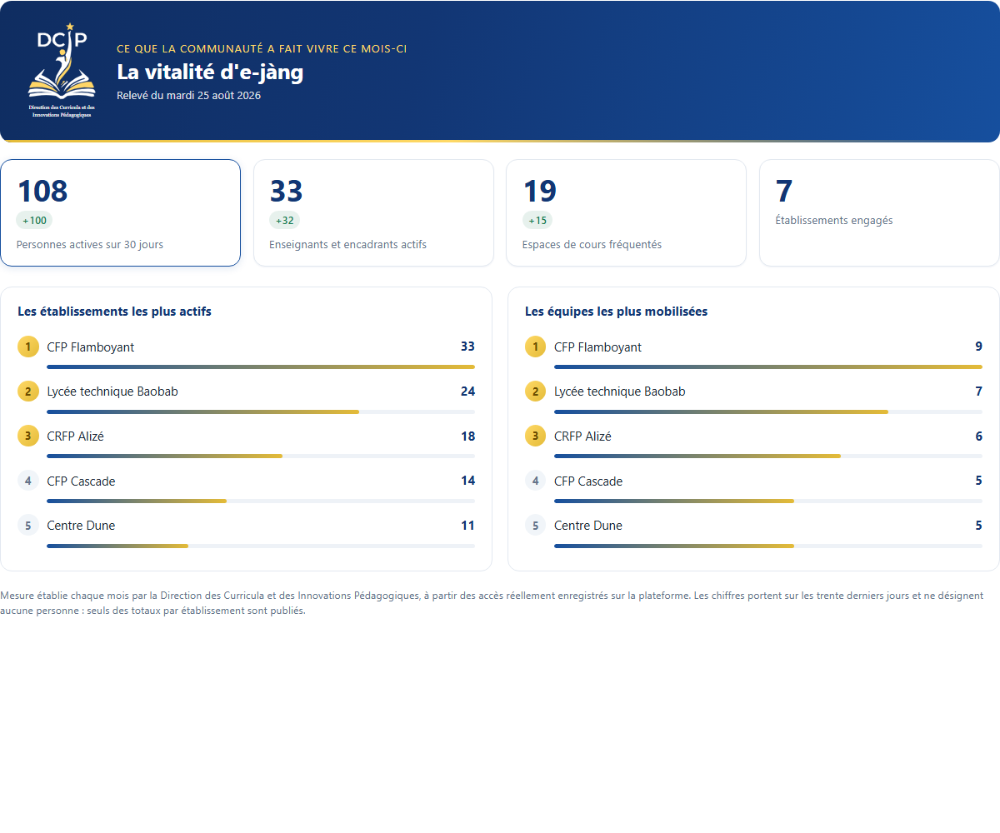
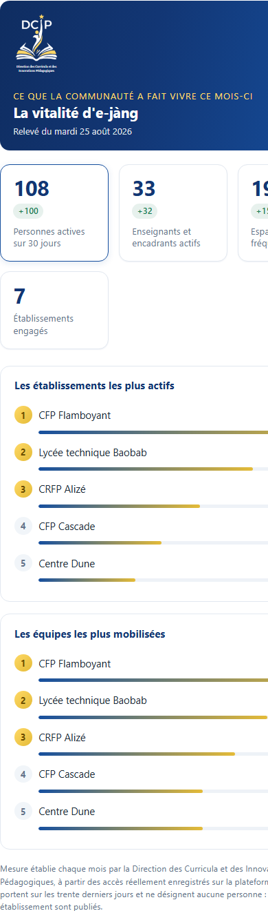

Le problème
La mesure de l'usage se faisait à la main : ouvrir une à une les pages de participants, relever la date du dernier accès, agréger. Plusieurs journées de travail, une seule personne capable de recommencer, aucun moyen pour un tiers de vérifier.
Trois obstacles, dont le troisième n'est pas technique
De méthode. La source ne conserve qu'une date par personne et par espace, sans compteur de visites. Tout indicateur formulé en « nombre d'accès » était donc impossible à produire, alors même que les rapports antérieurs en publiaient. La mesure était juste, le mot était faux.
Juridique. Une large part des espaces ne comptent qu'une seule personne inscrite. Y publier une date de dernier accès revient à publier le comportement d'une personne identifiable en un clic.
Politique. Les chiffres sont mauvais. Les afficher crûment sur une page publique produirait du retrait plutôt que de l'engagement et se retournerait contre le projet qu'ils devaient servir.
Le principe retenu
Deux publics, deux documents, une seule source de chiffres. Ce qui mobilise va sur la place publique ; ce qui alerte reste dans le rapport interne. Il ne s'agit pas de farder les résultats : un tableau de bord de communication et un instrument de pilotage ne se lisent pas de la même façon.
L'émulation entre personnes a été écartée au profit de l'émulation entre équipes : le dispositif publie le nombre d'enseignants actifs par établissement, jamais leur nom. Le ressort est le même et il valorise un collectif plutôt qu'un individu isolé.
La page publique

Quatre chiffres, deux palmarès, une note de méthode. Aucune personne n'y est nommée, aucune valeur inférieure au plancher n'y est publiée et un palmarès de moins de trois lignes n'est pas affiché du tout.
La protection, en trois étages
Le dispositif applique à une plateforme d'apprentissage des règles empruntées à la statistique publique, où elles sont la norme et où elles ne le sont pas ici.
| Étage | Règle | Ce qu'il empêche |
|---|---|---|
| Masquage primaire | sous le seuil, aucun indicateur de fréquentation n'est conservé | lire le comportement d'une personne dans un espace peu peuplé |
| Suppression secondaire | jamais une seule cellule supprimée dans une ligne | retrouver la valeur masquée par soustraction |
| Plancher de publication | aucune valeur sous le plancher sur la page publique | désigner quelqu'un en publiant « 1 » dans un petit centre |
Quand le masquage l'emporte sur l'utilité, cela se voit
Dans la liste de travail transmise aux responsables, un espace trop peu peuplé sort avec ses cellules vides et un état explicite. La consigne renvoie alors à la source vivante plutôt qu'à un chiffre figé.
À faire | Espace | Inscrits | Jamais venus | Vus sur 30 j | État -----------------------------------+---------------------+----------+--------------+--------------+--------------------------- Relancer les inscrits | Module 2 | 13 | 13 | 0 | Rempli mais désert Déposer du contenu | Module 1 | 19 | 8 | 11 | Vide mais fréquenté À vérifier dans le cours | Module 4 | 2 | | | Rempli, fréquentation non publiée
La première colonne est la raison d'être du fichier : elle transforme un tableau de chiffres en liste de travail. Un tableau sans verbe d'action finit dans un dossier.
Ce que la recette a rattrapé
Deux défauts de confidentialité ont été trouvés après coup. Tous deux venaient de corrections antérieures qui paraissaient bonnes. C'est ce qui les rend intéressants.
Le masquage était contournable par déduction
Masquer la seule date ne suffisait pas. Sur un espace à un inscrit, le compteur des personnes jamais venues dit exactement la même chose, tandis que l'état affiché dit l'inverse. Trois colonnes tombent désormais ensemble. La correction a été portée dans la collecte plutôt que dans l'affichage : ce qui n'est pas enregistré ne peut pas fuir plus tard.
Le masquage était réversible par soustraction
Une règle avait été posée pour que la somme des établissements retombe exactement sur le total national : agréger avant de masquer. Elle rendait le masquage inversible. Retrancher les espaces publiés du total de l'établissement restituait la valeur masquée. Lorsqu'un seul espace était concerné, elle l'était même exactement.
La règle de suppression secondaire de la statistique publique a été appliquée : lorsqu'un établissement ne compterait qu'un seul espace masqué, un second l'est également. La soustraction ne peut alors plus isoler personne.
La vérification
Le banc a été monté à la version exacte de la production
Et non à une version voisine. Deux pièges connus passent inaperçus sur une version plus récente et cassent en production : une syntaxe de langage postérieure et une méthode devenue facultative. Le composant refuse d'ailleurs de s'installer sur une version majeure supérieure : la frontière est matérialisée plutôt que documentée.
Le jeu de recette reproduit six pièges
Double méthode d'inscription sur un même espace, cumul de rôles, catégorie plus profonde qu'attendu, espace hors de toute branche, accès sans inscription correspondante, compte d'exploitation contaminant. Chacun de ces cas fausse un relevé d'usage sans que rien ne le signale.
Le résultat qui n'était pas attendu
Confronté à la source de référence de la plateforme sur plusieurs espaces, le dispositif s'est révélé exact à une ou deux unités près, l'écart correspondant exactement aux comptes d'exploitation écartés volontairement.
Ce faisant, il a établi que la mesure manuelle antérieure sous-estimait de près de moitié. L'instrument n'a donc pas seulement remplacé un travail fastidieux : il a montré que celui-ci voyait moins que la réalité.
Sur téléphone

Le téléphone est le premier écran de cette plateforme. L'adaptation aux petits écrans a été vérifiée en mesurant la page rendue plutôt qu'en la regardant : largeur de débordement, nombre de colonnes, troncature des libellés.
Ce que ce travail ne montre pas
Aucun relevé, aucun code source, aucun nom. Les captures proviennent d'un banc de démonstration alimenté par des données fictives. Aucun chiffre issu d'un relevé de la plateforme n'est publié ici : ni effectif, ni taux de remplissage, ni classement d'établissement. Ces chiffres appartiennent à l'institution qui exploite la plateforme. Leur publication est une décision qui lui revient. Le code porte la structure d'un système d'information public et n'a pas vocation à circuler.
Les seuls éléments de contexte conservés sont des ordres de grandeur de structure, sans lesquels le problème posé serait incompréhensible : une plateforme de plusieurs milliers d'espaces, dont beaucoup ne comptent qu'une personne. Ils décrivent la difficulté à résoudre, non les résultats obtenus.
Ce qui est présenté ici est la méthode : elle ne doit rien à la plateforme concernée et vaut pour tout dispositif de mesure portant sur de petits effectifs.
Dispositif conçu au sein de la Direction des Curricula et des Innovations Pédagogiques, ministère de la Formation professionnelle et technique du Sénégal. Mise en service en août 2026.
Oumar SALL, technopédagogue et ingénieur pédagogique. Voir les autres réalisations ou le dépôt de présentation.